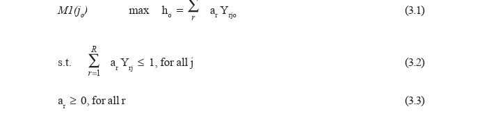
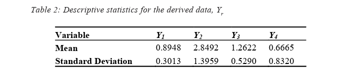
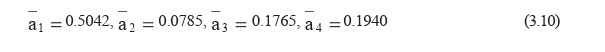

The basic types of decision models presented in the previous chapter (rational,
descriptive, political, and ambiguous models) relies on quantitative values
(money, time, or probabilities) that are most suitable for structured and semi
structured decision problems. These basic models can be used as starting
models to guide the structuring process of strategic decision problems. First,
a systematic procedure for structuring the strategic decision making process is
presented, using decision matrix and decision trees. The need for the sensitivity
analysis is introduced, and will be illustrated with more detail in the next chapter.
Some problems that must be considered in this structuring process are
illustrated in form ofhidden traps and paradoxes.
The first step in the decision-making process is to formulate the problem. It is
possible that an inadequate formulation of the problem leads to a result that reduces efficiency and efficacy, since an incorrect formulation can define a
wrong problem.
The person responsible for structuring the decision making model in a business is in charge of “asking the right questions, discovering the relevant elements; identifying the significant parameters; determining the signifi cant relationships among the selected elements and parameters; speculat ing about the “right size” and “correct formulation” of the problem; and evaluating the temporal characteristics (life cycles, duration, stability and discontinuity)” (Luftman et al., 1993).
Structuring a decision-making process depends on:
The solution to any decision making problem can be visualized in five stages:
These stages are based on procedures known in Management Science as PDCA (Plan, Do, Check, and Action). A more specific systematic procedure for structuring a decision-making process is (Monks, 1985; Simon, 1997; Clemen & Reilly, 2001):
A model describes, represents, and imitates the procedures that happen in the real world, establishing the relationship of the variables with the objectives in the best way possible, observing the time and cost limitations. The models can be of various types (Gordon, 1978; Monks, 1985):
Examples of Decision Problems
To launch a new product or not:
Possible decision alternatives:
Possible states of the market:
Inventory Manager
Buying decisions:
Possible states
Production Manager:
Mix of products to be assembled: x1 = automobiles, x2 = utility vehicles, x3 = trucks and x4 = buses.
Decisions:
States:
Service:
Decisions
States:
A mathematical decision model can be organized in a matrix form where:
Each element gji
of the decision matrix represents the gain (profit, loss, or cost)
of alternative Aj
(column j of the matrix) when state Si
occurs. The values of
these results should be predefined for all the possible alternatives and states. In
general, these values are approximated or estimated values based on past
experience and problems of the same type.
The occurrence of each state is not always certain as to what happens with no
risk-rational-decision problems. In the case of uncertainty or risk, each Sj state
is associated with a probability P(Sj). Since the possible states should form an
exhaustive set and should be mutually exclusive, the sum of probability of all the
states is equal to one. The value of each probability also should be estimated
by an expert or by the group of person of the decision-making process.
A decision matrix has the following format:

A decision matrix represents a decision process to be resolved in a single stage.
A decision tree is used to represent a sequential decision making process
through more than one stage of the decision (Figure 9.1).
A decision tree is a schematic representation useful for representing the process
of decision making with multiple variables, multiple objectives, and multiple
decision stages, while the decision matrix represents just one of the stages in the
decision-making process.
The decision tree structures any complex decision problem in a clear way since
it can identify the alternatives, the states and the possible scenarios. However,
its visualization becomes difficult when the size and complexity of the problem
increase, even using the resource of a computer software. This restriction is true
for all other types of representations of decision problems.
We are now ready to present the basic structures of decision problems found
in the literature of decision analysis. In the next chapters, these structures will
be expanded in the sense to include the complex factors and nonstructured
aspects that are common in strategic-decision problems (Clemen & Reilly,
2001; Keeney & Raiffa, 1976; Naylor et al., 1971).
Decision problems to select the best alternative under no-risk, uncertainty, or
risk situations will be discussed. For all cases, decision problems with single or
multiple criteria or goals, using utility values, will be presented. Also, a decision
model updated using feedback from additional information will be presented.
This decision problem has:
Since this is a problem with no risks or uncertainties, all the relevant information (gains or losses referring to each decision alternative) is known and the decision maker chooses the alternative related to the best possible result.
Example 9.1: Select a Property According to Highest Net Income
Company XYZ analyzes 3 alternatives for buying a building for a branch office, based on the Net Income Criterion which depends on the different forms of payment used. For each property, A1, A2. or A3, there are three payment alternatives (cash, 4 or 12 installments), and the Net Incomes, in thousand of dollars, are:

This decision involves no risk or uncertainty, since the three alternatives are
known and mutually exclusive and the choice of payment depends entirely on
the decision maker’s wish. Alternative A3 has all decision values lower or equal
to those of A2 and, thus, it is dominated by A2 and can be discarded from the
decision process. So, there are only two alternatives left, A1 and A2.
The decision can be made using the Min/Max or Max/Min principles (Hillier &
Lieberman, 1980; Cook & Russel, 1993). The Min/Max principle is known as the optimisticdecision; since it minimizes the highest income, while the Max/
Min principle is know as thepessimisticdecision, since it maximizes the lowest
income.
When a decision problem has several criteria or goals expressed in different
units, (for instance, expected income, distance, etc.) it is necessary to transform
each one of these values into the same unit of measurement. In a given
decision, the value of income cannot be mixed with other objective, such as
competitive edge, (expressed by the property’s location), comfort (the number
of rooms, visibility, etc.), or area (in square meters).
All these values should be transformed into the same unit called satisfaction
level or utility, whose values vary from 0 (to the worst level of satisfaction) to
1 (to the best level of satisfaction) (Luce & Raiffa, 1957; Goodwin & Wright,
1996).
Another difficulty refers to the conflicting nature of these goals, as in the case
of minimization of cost and maximization of employee labor conditions,
because the best solution to minimize cost usually may not maximize labor
conditions. The three goals (net income, competitive edge and available area)
of Example 9.2 are to be maximized, but the best solutions for each goal
correspond to different alternatives.
There is no solution fully satisfying all goals considered. A consensual solution based on the Pareto’s principle is usually adopted.
The Pareto’s Principle (Goicoechea et al., 1982; Hillier & Lieberman, 1980)
If a solution x* of a problem with k goals fk (x) is such that it is not possible to find any solution x with fk (x) better than fk (x*) for all k goals, then x* is an optimum Pareto solution
Example 9.2: Select a Property Considering Net Income and Two Kinds of Benefits (adapted from Goodwin & Wright, 1996)
Company XYZ studies three alternatives for buying a property for a new branch office, according to three different goals:net income, based on cash payment, competitive edge, given by the distance of the property from the commercial center, andtotal available area. We have the following values:
The worst and the best values of each goal should correspond to values 0 and 1 of the utility function, respectively. Utilities for the intermediate values are determined using different utility curves and will be explained in the next chapter.
Weighting the Criteria or Goals
In general, the three criteria should not be given equal weights, and the company
should choose the criterion with the greatest importance. If, for the company,
Net Income is the most important criterion or objective, then it gets arelative
weight equal to 1.
Each of the other criteria should get a relative weight according to the answer
given to the following question:
What is the importance of this criterion, in percentage terms, in relation to the Net Income?
If the answer is “lower than 20%,” possibly this criterion could be discarded,
simplifying the solution of the problem.
The following table shows the relative and the normalized values of weights, the
utility values for the three properties, and the weighted average:

The value of weights may alter the decision result. If we attribute a zero weight to Net Income and the same relative weights of 0.50 and 0.80 are kept for the two other criteria, the property chosen will be the property A3.
In order to analyze the variation of the three weights it is possible to use a two dimensional chart, placing the variation of the sum of two of the three weights (for instance, p = W2 + W3) on the horizontal axis, and the variation of the utility
(Excerpted from: Subjective Perception of Risk, Mark Fenton-O’Creevy
and Emma Soane, Financial Times, Mastering Risk, Part I, May 2, 2000, pp.
14-15).
Risk perception is a complex and subjective process. In finances, risk is usually
considered as a combination of the values of expected loss or gain and the
variability of this expected result. Human perception of risk acts in a different
way. There are two important risk components affecting our perception: the
fear factor — referring to fear of potential result — and thecontrol factor —
referring to the level of control over events. For instance, risk perception is very
high in a nuclear accident due to the fear factor or, it is higher for a car passenger
than the driver, due to control perception. In the financial market, both factors
are important –fear and anticipation of losses often control our actions. One
financial broker stated that “we often make decisions based more on the fear
of losing, than the hope of winning.”
The largest risk perception component is in how we perceive gain and loss.
Persons in a winning position of a game increasingly have an aversion to risk,
since they want to keep their gains, while individuals in a losing position are
more willing to take risks, because they have less to lose.
However, what we perceive as gain or loss depends on the personal standpoint,
which changes according to the situation and over time.
Economic and financial theories often make sure that a person makes optimum
use of available intuition as a basis for a rational decision, but research and
verification of daily behavior shows that human behavior is significantly different
from this statement.
In many decision problems, the states of nature occur with a certain level of
uncertainty known as risk. It is then no longer possible to apply the Min/Max or Max/Min principle since the risk occurrence with different probabilities does
not allow the choice of a greater or smaller gain value. One needs to obtain the
average or expected values.
In order to establish the probability values representing the uncertainty level or risk, the decision maker must receive information by (Charan, 2001; Edwards, 1975; Li & Ye, 1999):
In this chapter, the application of sensitivity analysis and the use of different types of utility function are explained with more detail, using the Example 8.1 shown in Chapter VIII as an example of the descriptive model of decision.
Example 9.3: Decision with Uncertainty (presented as Example 8.1 Descriptive model of decision, in Chapter VIII)
The following table shows the average return (profits or losses for a certain investment value) associated to the following strategies:
The average return varies according to the economic situation considering the possible economy states (recession, stability, or expansion).

Sensitivity Analysis
It is helpful to check the variation of expected values for different probability
values p1, p2, and p3, thus getting a chart that allows the analysis of strategic
limits of investments risks.
In order to assess value variations for p1, p2, and p3, the chart suggested by
Clemen and Reilly (2001) is adopted and shown in Figure 9.2. Since there are
three variables p1, p2, and p3, the values for p1 are placed on the horizontal
axis and p2 on the vertical axis. Values of p3 are implicitly expressed by the
property p1 + p2 +p3 =1. For instance, if p1 = 0 and p2 = 0, then p3 = 1; if
p1 = 0.2 and p2 = 0.2, then p3 =0.6, and so on.
In case of more than three risk possibilities, the sensitivity assessment using a
chart becomes impossible. In Sensitivity Analysis chart of Figure 9.2, each
point (p1, p2) contains the name of the best Aj alternative for a given risk value
(p1, p2, p3). For instance, in the numerical example seen, we have p1 = 0.4,
p2 = 0.4 and p3 = 0.2 with the expected EMV1
values = 300, EMV2
= 320
and EMV3
= 180. Thus, point (0.4, 0.4) will have A2 as the best alternative.
Once the best expected value is obtained for all different probability values,
expressed by the points (p1, p2) in the chart, the strategic regions where each
Aj investment alternative is the best solution are easily known.
A “decision based only on expected monetary values” may not be perfect
since it does not analyze every earning possibility, such as highest profit or
worst loss. Besides, expected value based on numeric values such as money,
dimension, or age does not allow the inclusion of nonquantitative criteria such
as “client satisfaction”, “product quality”, etc. The decision based on the “level
of satisfaction or utility function,” associated to each quantitative or non
quantitative (or qualitative) value, best expresses the decision alternatives.
In the Example 9.3, a decision should consider other factors involving the
decision maker’s interests. Using the expected monetary values EMV, a player
or decision maker should never get the highest earning of $700 given in
alternative A3, even at the risk of losing (-$100). Utility function transforms
quantitative and qualitative values in corresponding utility values, allowing
better analysis of complex decision problems.
Risk Neutral Decision-Making
If the decision maker is risk neutral, he or she would use the risk neutral curve
of Figure 9.3 and would probably not choose alternative A3, where $700 is the
highest earning value and $100 represents a loss.
A risk neutral decision maker is usually a midsized or large organization with
long experience in its activity. Thus, data placed on the decision matrix were
analyzed by a consultant team, and there would be no reason to doubt the linear
behavior of these values.
Risk Averter Decision-Making
The average values using these utility values are:
EMV1
= 0.4 x 0.75 + 0.4 x 0.75 + 0.2 x 0.75 = 0.75;
EMV2
= 0.4 x 0.85 + 0.4 x 0.75 + 0.2 x 0.62 = 0,764; and
EMV3
= 0.4 x 0 + 0.4 x 0.62 + 0.2 x 1 = 0.448.
Risk averter decision makers wishing to maximize their personal satisfaction with the utility function would choose alternative A2. A risk averter person or organization is one with small amount of resources or with little experience in this kind of decision. A risk averter cannot count on counseling or assistance from other people or organizations to explain the pros and cons of the alternatives presented. However, there are different risk aversion levels, depending on whether there is greater or lesser knowledge of the problem. For instance, when buying real state, both the homemaker who wishes to buy a house and the real estate broker may be risk averters. The homemaker’s risk aversion level is usually higher than the broker’s.
Risk Taker Decision-Making
By using the curve expressing“risk taker or risk preference” in Figure 9.2, the decision maker may get, for instance, the following expected earnings: EMV1 = 0.18, EMV2 = 0.217 and EMV3 = 0.25 and thus could choose alternative A3, where there is highest risk, but with earning possibilities of $700. A person or organization prefers to take risks when believes that the reward is worth the risk or when the time frame limit enforces a risky alternative.
Learning process in descriptive models of decision can be made using the adaptive or feedback model of statistics. The best known learning process is made using Bayes’ Theorem, in which prior values of probabilities can be updated by additional information collected through a new sampling process (Shamblin & Stevens, 1980; Hillier & Liebermann, 1980; Takahashi, 1997). This process can be repeated many times, renewing the values of probabilities at each step of decision. The following Example 9.4 illustrates this process.
Example 9.4. Renewing Probabilities in an Opinion Survey
Senator Bill Hernandez (BH) is a candidate for the next presidential election.
His supporting committee hired an opinion research company to conduct, in
each month prior to the election day, a nationwide opinion survey about the
preference of the electoral population, whether preferring Senator BH or the
other adversary. The results of the last research, expressed in probability terms
were: P (S1)= P(BH wins)= 0.3, P (S2)= P (there is a tie)= 0.3, and P (S3)=
P (Adversary wins)= 0.4.
After each round of the research, one of the following decisions must be taken
by the supporting committee:
the previous survey. The result of this small scale survey, called additional
information F, predicted that F = {BH wins in the major capital cities}.
Based on this addition information F, the opinion research company will predict
whether or not candidate BH wins. The difficulty is that the result of this small
scale survey, made only in major capital cities, does not always coincide with
the final result of the election.
In the past, the supporting committee observed that 60% of the time, this
additional research predicted that “BH wins in major capitol cities”, then the
election was actually won by BH. This fact can be expressed as the conditional
probability P (F / S1)= 0,6.
On the other hand, 40% of time the additional research predicted that “BH wins
in major capitol cities”, the election ended in a tie between the two candidates,
while only 20% of time, the election was actually won by the other candidate.
Then, for the additional information F we have the other two conditional
probabilities: P (F / S2) = 0.4 and P (F / S3)= 0.2. Using probability formula
we have:
After this additional information F, average values of win or loss of voters for each decision are:
EA1 = 0.474 · 100,000 + 0.316 · 150,000 + 0.210 · 50,000 = 105,200,
EA2 = 0.474 · 100,000 + 0.316 · 200,000 + 0.210 · 150,000 = 165,800,
and
EA3 = 0.474· 50,000 + 0.316· (-50,000) + 0.210· (-200,000) = -34,100.
Best decision is again A2, and the additional information F = {BH wins in major
capital cities} reinforces this strategy.
Each month, after the results of the nationwide opinion survey, this updating
process can be repeated.
It is important to remind us that in a strategic-decision-making procedure many
other factors become more and more difficult and complex in a systematic way
to structure the decision process. The systematic structuring methodology
presented in the previous sections are valid for decision problems of tactical or
operational levels and must be considered as a starting procedure for strategic
decision problems.
Many types of difficulties must be considered when a strategic-decision
problem is to be structured. These difficulties are reported by researchers in the
form ofparadoxes orhidden traps that reflect the different aspects of human
behavior under uncertainty, risk or complexity to determine a consistent list of
decision alternatives.
Most of the difficulties are related to the problem of how an individual or
group’s risk attitude can change depending on the way the decision problem is
posed. A person may have different attitudes (risk neutral, risk preference or
aversion to risk) to lose a certain amount of money during the initial and final
phase of a gamble or, when the total amount of money available to play the
game or invest in the stock market is small or large.
A person’s or group’s attitude can change depending on many factors such as
time, financial situation, or responsibilities according to the problem to be
solved. This fact is known asframing problem because different persons can
see different frames (of values or structures), simplifying the reality.
The effects of hidden traps mentioned in a Case Study, as well as Allais or
Ellsberg’s paradox can be minimized forming different decision alternatives
given by different groups of persons. These alternatives are discussed and a
final decision can be reached by negotiation or by the use of votes. St.
Petersburg’s paradoxis concerned with the possibility of unknown value of
probability expectation but the use of utility value can help to solve the problem.
St. Petersburg’s paradox (Takahashi, 1997; Clemen & Reilly, 2001; Goodwin & Wright, 1996)
Let us consider the following two types of coin tossing game which must be held until the first occurrence of “head.”
Game I:
If the first head occurs in the first trial, the player receives $2; if it occurs in the second trial, he or she receives $4, and son on, until the occurrence of head in the k-th trial, when he or she receives $2k
Game II:
Whichever trial occurs head for the first time, the player receives a fixed amount of money $W. Which one of the games must a player select?
Game II gives always the Expected Value E2 = $ W.
Expected Value of Game I is E1 =¥, according to probability theory. Thus, the
profit in Game I is, at least theoretically, greater than any value of profit in Game
II. But in Game I, we assume that the profit is greater than any amount $W if
the coin is tossed an infinite number of times. What is the meaning of “infinite
number of times”? The answer is the number K of trials of a coin until the first
occurrence of a head has a geometric distribution with expected value E(K) = 1/p, or E(K) = 2, for the case of the coin, where p=1/2. Thus Game II will be
preferred when the expected monetary value $ W is greater than $2, which is
a value far from infinite.
This paradox can be solved using the utility function, that shows that game II
must be preferred when the monetary value $W is more than $4, which satisfies
the decision based on the expected value of the geometric distribution.

Questions
Which of the two options (A or B) would you choose in Game I?
Which of the two options (C or D) would you choose in Game II?
Game 1:
Usually, due to the fixed profit of Option A, persons consider that the utility value of A is greater than the utility value of B, or U(A)>= U(B), or U(200)>= 0.10 x U(1000)+ 0.89xU(200)+ 0.01x U(0) and then 0.11 x U(200)>= 0.10 x U(1000) + 0.01 x U(0).:
Game 2:
The probability of profit $200 of option C is similar to the probability of profit $1000 of option D. It seems reasonable that persons prefer a greater profit ($1000 versus $200). Using utility we have:
U(C)<= U (D)or 0.11 x U(200)+ 0.89 x U(0)<= 0.10 x U(1000)+ 0.90 x U(0)and then 0.11 x U(200) <= 0.10 x U(1000)+ 0.01 x U(0).
Thus, this paradox presents two contradictory inequalities, which may be explained by the fact that utility theory does not attempt to describe the way in which people choose a utility value.
A final paradox (Ellsberg’s Paradox) solves Allais’s paradox considering different attitudes of persons’ preference with respect to uncertainty and risk: neutral to risk, aversion to risk, and preference to risk, relaxing the fundamental law of probability theory, where the sum of the probabilities of all the events must be equal to 1.
In this chapter, steps to structure a decision model through a systematic way,
based on the PDCA (Plan, Do, Check, and Action) principle, were presented.
The decision matrix and decision tree are tools used to organize a starting model
of a strategic-decision problem. A decision matrix is used to represent a one
stage decision problem while a decision tree is used to represent a sequence of
decision-making stages.
Examples of problems to select the best alternative under no risk, uncertainty,
or risk situation were presented. For all cases, decision problems with single or multiple criteria or goals, using utility values, were presented. A decision
model updated using feedback from additional information was also presented.
Difficulties to be considered in the structuring process of decision models are
illustrated in the form ofparadoxes orhidden traps that reflect the different
aspects of human behavior under uncertainty, risk, or complexity, to determine
a consistent list of decision alternatives.
In the following chapters, we will extend the structuring process described in
this chapter, to more general and different kinds of strategic-decision-making
problems.
(Excerpted from “The Hidden Traps in Decision Making “, by J .S. Hammond, R. L. Keeney and H. Raiffa, Harvard Business Review, September- October, 1998, pp. 47 to 54)
“In making decisions, your own mind may be your worst enemy.”
What are the causes of a bad decision? Due to the complexity in structuring and formulating a decision-making problem and the high level of subjective judg ment, bad decisions occur frequently. The “hidden traps” which accompany the decision-making process can cause errors in the formulation and structuring of a decision problem, as well as in choosing the correct alternative.
The main traps are:
One way to minimize the occurrence of “bad decisions” is to use the process of Sensibility Analysis, submitting a decision to controlled variations of the values involved. This analysis can be done if there is an opportunity to ask questions such as “WHAT IF?” at any given moment.
Make up several groups with five people at most in each. Use the Sunday classified ads from some national newspapers and construct the decision model (the decision matrix and the decision tree) for the following problems:
Each problem should have at least five decision alternatives, i.e., choose five residential properties, five pieces of land, five cars, etc. The param eters and objectives or criteria for the decision should be defined by each group. Compare the decision matrixes constructed by different groups and discuss the causes for existing differences.

Bass, B. M. (1983).Organization decision making. Homewood, IL: Richard
D. Irwin.
Charan, R. (2001). Conquering a culture of indecision. Harvard Business
Review, 79(4), 75-82.
Clemen, R. T., & Reilly, T. (2001). Making hard decisions with decisions
tools. New York: Duxbury Press.
Cook, T.M., & Russel, R.A.(1993). Introduction to management science.
NJ: Prentice-Hall.
Dyson, R.G. (Ed.). (1990). Strategic planning: models and analytical
techniques. New York: Wiley.
Edwards, W. (1975). Cognitive process and the assessment of subjective
probability distributions. Journal of the American Statistical Associa
tion, 70(350), 291-293.
Goicoechea, A., et al. (1982). Multi-objective decision analysis with
engineering and business applications. New York: John Wiley & Sons.
Goodwin, P., & Wright, G. (1996). Decision analysis for management
judgment. New York: John Wiley & Sons.
Gregory, G. (1980).Decision analysis. New York: Pitman Books.
Hammond, J. S., Keeney, R. L., & Raiffa, H. (1998). The hidden traps in
decision making. Harvard Business Review, 76(5), 47-58.
Hillier, F., & Libermann, G. J. (1980). Introduction to operations research
(3rd ed.). New York: Holden Day.
Keeney, R., & Raiffa, H. (1976). Decisions with multiple objectives:
preferences and value tradeoff. New York: Wiley & Sons.
Kinoshita, E. (1996). Introduction to management science (in Japanese).
Tokyo: Sakurai Publishers.
Li, M., & Ye, L.R. (1999). Information technology and firm performance:
Linking with environmental, strategic and managerial contexts.Informa
tion & Management, 35(1), 43-51.
Luce, R. D., & Raiffa, H. (1957). Games and decisions. New York: John
Wiley & Sons.
Monks, J. G. (1985). Operations management. Schaun’s Outline Series,
New York: McGraw-Hill. Naylor, T., et al. (1971). Computer simulation experiments with models of
economic systems. New York: John Wiley & Sons.
Phillips, M. E., & Brown, C. E. (1991). Need an expert? Ask a computer.
Journal of Accountancy, 5, 91-93.
Raiffa, H. (2002). Negotiation analysis — The science and art of collabo
rative decision making. Cambridge, MA: Harvard University Press.
Shamblin, J., & Stevens, G.T. (1980). Operations research: An algorithmic
approach. New York: McGraw-Hill.
Takahashi, N. (1997). Decision analysis inside the organization (in Japa
ese). Tokyo: Assakura Publishers.
Takefuji, Y. (1996). Neural computing (in Japanese). Tokyo: Corona Pub
lishers.
Turban, E., & Aronson, J.E. (1998). Decision support systems and intelli
gent systems(5th ed.). New York: Prentice-Hall.